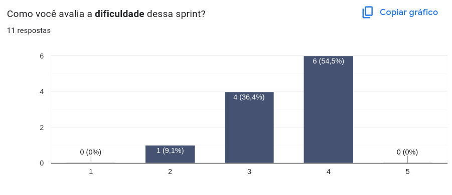
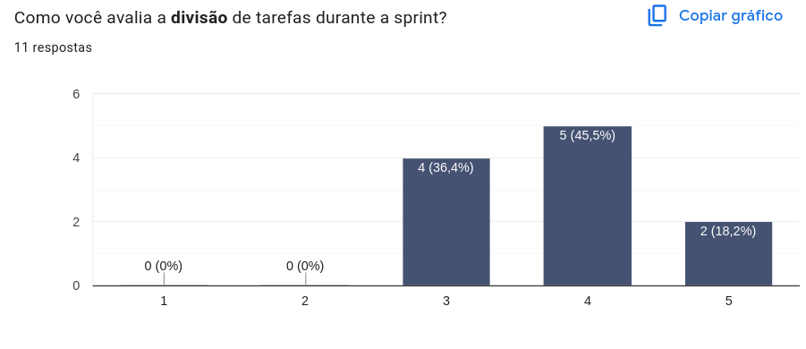
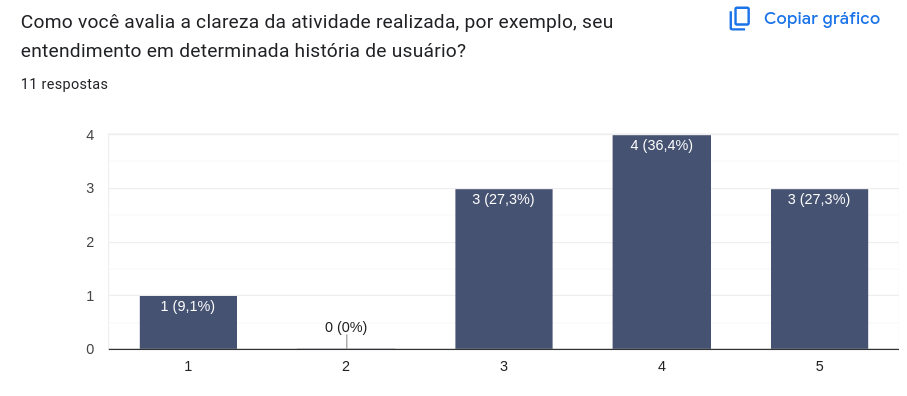
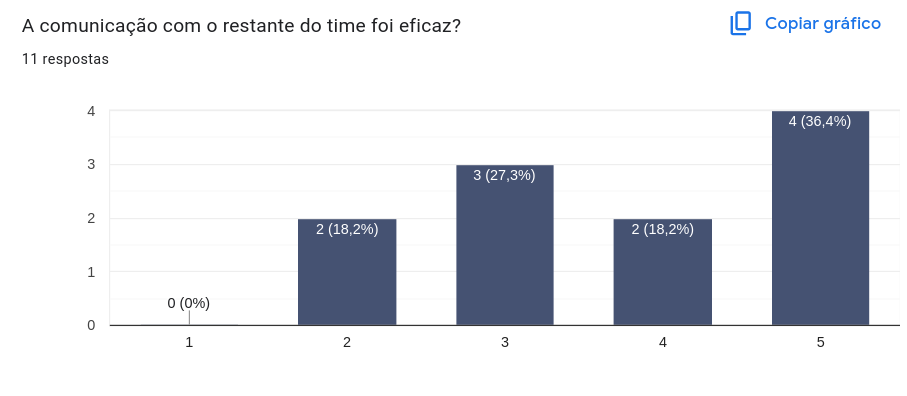
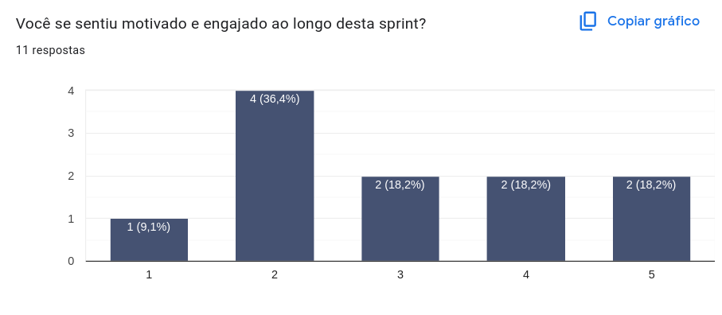
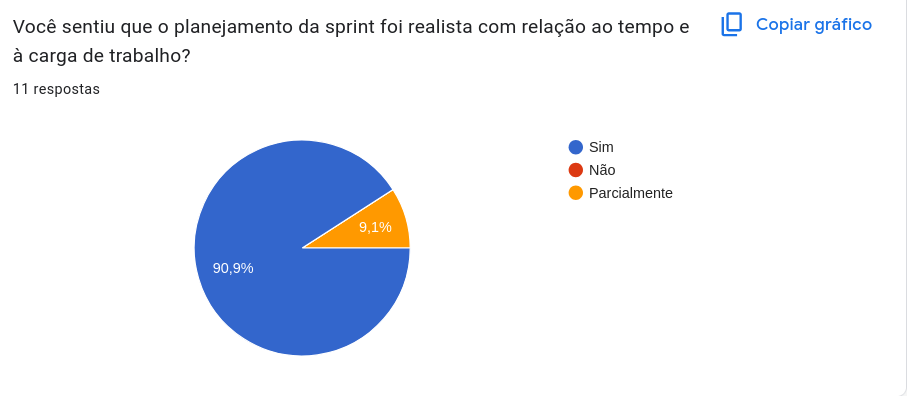
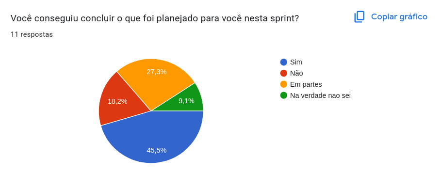

Retrospective – Sprint 6
Este documento apresenta os principais resultados da retrospectiva na Sprint 6 do projeto Vai Pela Sombra, com base nas respostas dos membros da equipe por meio de um formulário. O objetivo da retrospectiva é refletir sobre o que funcionou bem, o que pode ser melhorado e alinhar expectativas para as próximas sprints.
Histórico de Revisão
| Data | Versão | Descrição | Autor(es) |
|---|---|---|---|
| 08/07/25 | 1.0 | Adicionando conteúdo da Retrospectiva | Suzane Duarte |
Avaliações Coletivas
Dificuldade das Tarefas
"Como você avalia a dificuldade dessa sprint?"
A maioria da equipe considerou a sprint desafiadora, com 54,5% dos respondentes atribuindo nota 4 e 36,4% nota 3. Apenas uma pessoa (9,1%) deu nota 2 e nenhuma avaliou com notas extremas. Isso indica uma percepção de dificuldade significativa, mas dentro de um contexto gerenciável. O time demonstrou resiliência frente aos desafios propostos.

Divisão de Tarefas
"Como você avalia a divisão de tarefas durante a sprint?"
A divisão de tarefas foi percebida como positiva, com 45,5% dando nota 4, 36,4% nota 3 e 18,2% nota 5. A ausência de notas baixas reforça que os critérios de distribuição estão bem definidos e funcionais, ainda que haja espaço para otimização da carga entre os membros.

Clareza das Atividades
"Como você avalia a clareza da atividade realizada, por exemplo, seu entendimento em determinada história de usuário?"
A clareza das atividades foi bem avaliada: 36,4% atribuíram nota 4 e outros 27,3% deram nota 5, refletindo uma boa compreensão das tarefas. Houve três avaliações com nota 3 e apenas uma com nota 1. Isso indica que, embora a comunicação das demandas esteja boa, ainda existem lacunas pontuais que podem ser ajustadas.

Comunicação com o Time
"A comunicação com o restante do time foi eficaz?"
A comunicação foi bem avaliada por parte da equipe, com 36,4% dos respondentes dando nota 5. Ainda assim, 27,3% marcaram nota 3, e dois membros deram nota 2, sinalizando que houve desafios de alinhamento e que a fluidez da troca pode ser melhorada.

Engajamento e Motivação
"Você se sentiu motivado e engajado ao longo desta sprint?"
Este foi o ponto mais crítico da retrospectiva: a maioria das respostas ficou nas notas mais baixas. 36,4% atribuíram nota 2 e 9,1% nota 1, enquanto notas mais altas (4 e 5) ficaram empatadas em 18,2% cada. O resultado aponta para uma necessidade urgente de trabalhar o clima e o engajamento da equipe.

Planejamento Realista
"Você sentiu que o planejamento da sprint foi realista com relação ao tempo e à carga de trabalho?"
A avaliação foi extremamente positiva: 90,9% dos participantes consideraram o planejamento realista, e apenas uma pessoa marcou "parcialmente". Isso mostra maturidade no planejamento e uma boa estimativa de esforço.

Conclusão das Tarefas
"Você conseguiu concluir o que foi planejado para você nesta sprint?"
Apesar de o planejamento ter sido considerado realista, apenas 45,5% afirmaram que conseguiram concluir suas tarefas. Um total de 27,3% disseram que entregaram parcialmente, enquanto 18,2% não conseguiram concluir e 9,1% estavam em dúvida. Isso pode estar relacionado à queda de motivação identificada anteriormente.

Avaliação Individual
"Como você avalia sua própria participação no time durante esta sprint?"
As respostas indicam uma participação variada por parte dos membros da equipe. Vários participantes relataram contribuições positivas como a integração entre front e back-end e a realização de testes unitários. Alguns destacaram que conseguiram avançar bem em suas tarefas, embora ainda haja pontos a alinhar ou finalizar, como a parte de destinos.
Outros membros apontaram limitações de tempo devido a compromissos acadêmicos, como provas, o que impactou sua participação. Também houve relatos de dificuldades técnicas, como problemas na documentação de rotas do backend e incertezas relacionadas ao uso de ferramentas. Em geral, o time demonstrou esforço e compromisso, mesmo com desafios externos interferindo no ritmo de trabalho.
Avaliação em grupo
"Em relação aos outros membros do seu Squad (times), como foi o trabalho com eles?"
As percepções sobre o trabalho em grupo foram mistas. Parte dos participantes relatou boas experiências de colaboração, destacando apoio de MDS e EPS na resolução de dúvidas e boa comunicação no desenvolvimento das tarefas. Também foram citadas experiências positivas na integração entre membros e realização conjunta de funcionalidades.
No entanto, houve registros de desafios de comunicação e engajamento. Foram mencionadas situações de silêncio nos canais de comunicação, baixa interação e dificuldades em realizar pareamentos. Um caso específico destacou a baixa participação de um membro que afetou a divisão e entrega de tarefas.
No geral, observa-se que a experiência de trabalho em grupo foi positiva para parte significativa do time, mas ainda requer aprimoramentos na consistência da comunicação e na integração ativa de todos os integrantes.
O Que Funcionou Bem
"O que funcionou bem nesta sprint?"
As respostas indicam que a comunicação foi um ponto positivo nesta sprint, especialmente entre duplas de pareamento, nos grupos de WhatsApp e no alinhamento entre front e back-end. Também foram destacados aspectos como a divisão de tarefas e a troca de dúvidas técnicas.
Ainda que algumas respostas tenham sido neutras ou pouco conclusivas (como “nada a comentar”, “não sei dizer” ou “-”), é possível observar que, para parte da equipe, houve avanços importantes em colaboração e execução conjunta de funcionalidades. A sinalização de organização e disponibilidade para resolver problemas técnicos mostra maturidade em alguns pontos da dinâmica do time.
Sugestões de Melhoria
A maioria dos participantes não trouxe sugestões específicas, com respostas como “não”, “não sei dizer” ou “nada”. No entanto, algumas observações relevantes surgiram pontualmente, como a necessidade de maior engajamento dos membros do time e sugestões para que haja mais motivação e avisos relacionados às reuniões.
Esses apontamentos indicam que, apesar de um ambiente de trabalho razoavelmente estruturado, ainda há espaço para aprimorar a participação ativa da equipe. Estimular a presença em rituais e fortalecer o sentimento de pertencimento podem ser ações importantes para a próxima sprint.